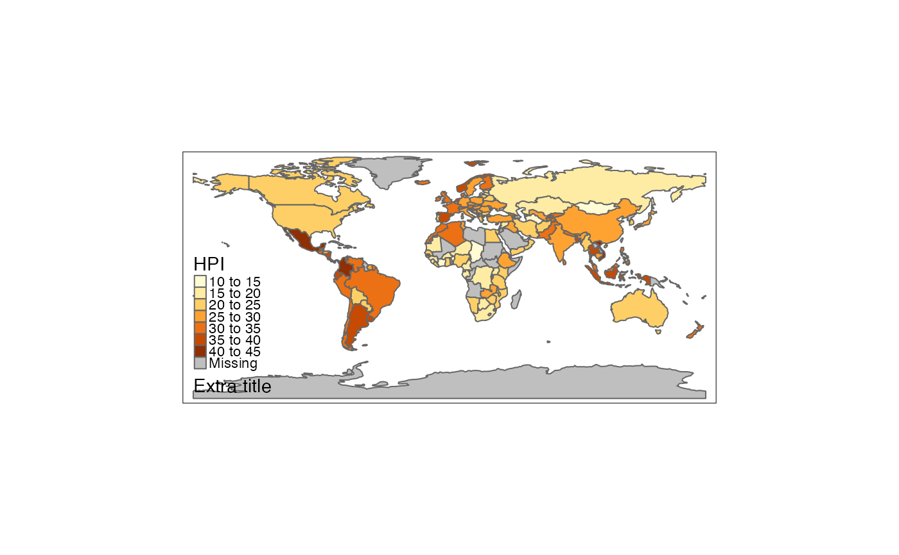

Generates a tip with an example. The tip and example code are printed, and the example itself is executed.
tmap_tip(from.version = NULL)version number. Only tips regarding features from this version are shown.
tmap_tip()
#> Basemaps can be disabled as follows, or by setting tmap_options(basemaps = NULL).
#> New since tmap 2.0
#>
#> data(World)
#> tm_basemap(NULL) +
#> tm_shape(World) +
#> tm_polygons("HPI")
#>
tmap_tip(from.version = "3.0")
#> With tm_add_legend, it is also possible to add an extra legend title line.
#> New since tmap 3.1
#>
#> data(World)
#> tm_shape(World) +
#> tm_polygons("HPI") +
#> tm_add_legend(type = "title", title = "Extra title")

#>